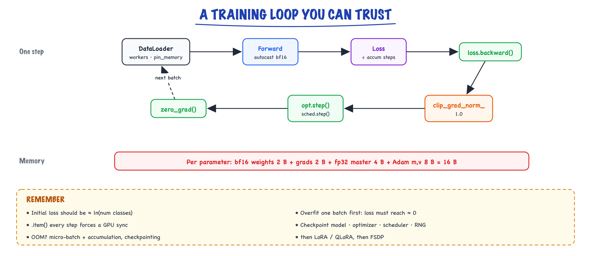

PyTorch in practice // Math & ML foundations
Tensors, autograd, a trustworthy training loop, mixed precision, GPU memory and debugging a run.
01 — At a glance

One step of a production training loop, read left to right along the top and back along the bottom, and where a GPU's memory goes.
02 — New words
| Word | Meaning |
|---|---|
| Tensor | PyTorch's n-dimensional array. It has a shape, a dtype (number format) and a device (CPU or a GPU). |
| Broadcasting | Automatically stretching size-1 or missing dimensions so tensors of different shapes can be combined element by element. |
| Autograd | PyTorch's automatic differentiation: it records operations during the forward pass and applies the chain rule backwards when you call backward(). |
Leaf tensor / .grad | A tensor you created with requires_grad=True (usually a parameter). Its gradient is added into its .grad field. |
nn.Module | The base class for layers and models. It tracks parameters, sub-modules, and a training/evaluation mode flag. |
state_dict | A dictionary of a module's (or optimiser's) tensors by name: what you save and load as a checkpoint. |
| DataLoader | Wraps a dataset to produce shuffled mini-batches, optionally using background worker processes. |
| Mixed precision | Running most maths in a 16-bit format (bf16 or fp16) for speed and memory while keeping sensitive values in 32-bit. |
| Loss scaling | Multiplying the loss by a large factor before backward() so tiny fp16 gradients do not round to zero, then dividing it back out. |
| Activations (saved tensors) | Intermediate results of the forward pass that autograd keeps because the backward pass needs them. Often the largest memory cost in training. |
| Activation checkpointing | Saving only some activations and recomputing the rest during backward: less memory, more compute. |
torch.compile | Captures a model's operations as a graph and generates fused, faster kernels for it. |
The lesson
03 — The question
PyTorch is how almost every model in this course is built, trained and fine-tuned. Its core is small: tensors, autograd and modules. Its difficulty is that a training loop with a bug usually runs. It produces a loss curve, the loss even goes down, and the model is quietly worse than it should be or will not fit on the GPU when you scale it up. The skill interviewers probe is knowing what each line of a training loop does to memory and to gradients.
- Write a correct training loop. What are the most common silent bugs?
- Where does GPU memory go during training, and what do you do when you run out?
- bf16 or fp16: what is the difference, and why does fp16 need loss scaling?
- What do activation checkpointing and
torch.compiletrade, and when would you use them?
The running example: a ticket-intent classifier. Each support ticket has already been turned into a 384-number embedding (by an embedding model, see Embeddings), and we train a small network to sort tickets into five intents: billing, bug, login, feature request, cancellation. The data is 4,000 labelled tickets (3,200 for training, 800 for validation). The model is a two-layer MLP: 384 → 256 with GELU and 10% dropout → 5, which has \(384 \times 256 + 256 + 256 \times 5 + 5 = 99{,}845\) parameters. At the end we scale the same reasoning to a 1.3-billion-parameter model to see where memory goes.
04 — Step 1: tensors, shapes and broadcasting
A tensor is a block of numbers with a shape, a dtype and a device. One mini-batch of our tickets is a tensor of shape (32, 384), dtype float32, and the labels are shape (32,) of integers. The model maps (32, 384) to logits of shape (32, 5). Writing the shape next to every line is the most effective debugging habit in deep learning; most bugs are shape bugs.
The first layer computes x @ W.T + b with W of shape (256, 384) and b of shape (256,). The matrix product gives (32, 256), but b is (256,). Broadcasting makes this work: PyTorch aligns shapes from the right, and any dimension that is missing or of size 1 is stretched to match. So b is treated as (1, 256), then as (32, 256): the same bias added to every row. That is exactly what we want.
Broadcasting is also the source of a classic silent bug. A regression model outputs predictions of shape (3, 1); the targets are shape (3,). Compute the squared error:
- Predictions [[1], [2], [3]], targets [1, 2, 3]. The predictions are perfect.
pred - targetbroadcasts (3, 1) against (3,) to a (3, 3) matrix: every prediction minus every target.- The mean of its squares is 1.333 instead of 0.0. Training will "work" and fit the wrong objective.
F.mse_loss prints a warning for this case; a hand-written ((pred - target) ** 2).mean() does not. The fix is to make the shapes equal deliberately (pred.squeeze(-1)) and assert shapes in your loss code.
Two more tensor facts that matter later. A tensor lives on one device, and an operation between a CPU and a GPU tensor is an error; moving data with .to(device) is a copy across a bus and is slow if done per item instead of per batch. And many operations (view, transpose, slicing) return a view of the same memory with different strides rather than a copy, which is cheap but means an in-place change through one view changes the other.
05 — Step 2: autograd records a graph and accumulates gradients
When a tensor with requires_grad=True takes part in an operation, PyTorch records that operation and keeps whatever the backward pass will need. For c = (a * 3).relu().sum(), the result carries grad_fn=SumBackward0, which points to ReluBackward0, which points to MulBackward0. Calling c.backward() walks that chain applying the chain rule, exactly as in Neural networks, Step 3, and writes the results into each leaf tensor's .grad.
The key word is writes into: gradients are added to .grad, not stored over it. Take \(w = 2\) and loss \((3w)^2\), whose gradient is \(18w = 36\). Call backward() three times without clearing and w.grad reads 36, then 72, then 108. In a training loop that forgets optimizer.zero_grad(), every step uses the sum of all previous gradients: the effective learning rate grows every step and training goes unstable.
Accumulation is deliberate, because it is useful: to train with an effective batch of 128 when only 32 fit in memory, run four forward-backward passes, let the gradients add up, divide the loss by 4 so the sum is an average, then take one optimiser step and clear.
Two context managers switch recording off:
torch.no_grad()(or the slightly fastertorch.inference_mode()) for evaluation and inference. Without it, every evaluation batch builds a graph and keeps its activations alive: wasted memory, and sometimes an out-of-memory error in the validation loop of a run that trains fine.tensor.detach()returns the same values cut off from the graph, for logging a loss value or using a model output as a fixed target.
06 — Step 3: modules, modes and state
An nn.Module does three jobs. It registers parameters: any nn.Parameter or sub-module assigned as an attribute is found by model.parameters(), which is how the optimiser knows what to update. Tensors stored in a plain Python list are invisible to it (use nn.ModuleList), a mistake that leaves part of a model untrained without any error.
It carries a mode. model.train() and model.eval() flip a flag that some layers obey. Dropout is the clearest case: in training mode it zeroes each value with probability \(p\) and multiplies the survivors by \(1/(1-p)\) so the expected value is unchanged; in evaluation mode it does nothing. Run the same input through a dropout-0.5 layer twice in training mode and you get two different outputs, with some entries zeroed and the rest doubled; in evaluation mode the output is fixed. Forgetting model.eval() makes validation noisy and pessimistic. Forgetting to switch back to model.train() after evaluating silently turns dropout off for the rest of training. BatchNorm has the same split (batch statistics in training, running averages in evaluation).
It exposes a state_dict: an ordered mapping from names ("0.weight", "0.bias", "3.weight", …) to tensors. A checkpoint you can resume from saves the model's and the optimiser's state_dict (AdamW's moment estimates are part of training state), the learning-rate scheduler, the step count and the random-number-generator states. Saving only the model weights lets you run inference, but resuming training from them restarts Adam's statistics and the schedule, which shows up as a loss spike.
07 — Step 4: feeding data without starving the GPU
A Dataset answers two questions: how many examples, and what is example \(i\). A DataLoader turns it into batches: it shuffles indices each epoch (for training; never needed for validation), groups them into batches of 32, and stacks the examples into tensors. For our tickets that is 100 batches per epoch.
With real data, loading is often the bottleneck: reading files, decoding, tokenising, padding. If that happens in the training process, the GPU waits idle for every batch. num_workers greater than 0 runs loading in parallel background processes so the next batches are ready, and pin_memory=True places batches in page-locked memory so the copy to the GPU can overlap with computation. The tell-tale sign of a starving GPU is utilisation that oscillates between 0% and 100% instead of staying high; the fix is more workers or moving expensive preprocessing (tokenisation) offline.
For text, batches contain sequences of different lengths. Padding everything to the maximum length wastes compute on pad tokens; sorting or bucketing by length so that each batch contains similar lengths, or packing several short sequences into one row, recovers it.
08 — Step 5: the training loop, line by line
Every PyTorch training loop is the same six operations in the same order:
- Move the batch to the model's device.
- Forward:
logits = model(x), shape (32, 5). - Loss:
F.cross_entropy(logits, y). It takes raw logits and integer class labels, and applies log-softmax itself; passing probabilities is a silent bug. - Clear old gradients:
optimizer.zero_grad(set_to_none=True). Setting them toNoneinstead of zeros saves a memory write. - Backward:
loss.backward()fills every parameter's.grad. - Step:
optimizer.step()updates the parameters (andscheduler.step()if there is one). Optionally clip gradients between backward and step.
Zeroing can go anywhere before backward(); what matters is that it happens once per optimiser step. Then, periodically, evaluate under model.eval() and torch.no_grad(), and switch back.
Before trusting any run, check the first loss. With five classes and a fresh model, the prediction should be close to uniform, so the loss should be near \(\log 5 = 1.609\). Ours is 1.607 on the first batch. Then the run itself, AdamW at learning rate \(10^{-3}\):
| Epoch | Validation loss | Validation accuracy |
|---|---|---|
| 1 | 1.049 | 91.5% |
| 2 | 0.377 | 94.0% |
| 3 | 0.248 | 93.6% |
| 4 | 0.213 | 94.0% |
| 5 | 0.202 | 93.2% |
Validation accuracy stops improving after epoch 2 and wobbles by under a point (800 examples, so one point is 8 tickets), while validation loss keeps falling: the model is becoming more confident on examples it already gets right. Choose the checkpoint by the metric you care about, and expect the train–validation gap to widen if you keep going.
09 — Step 6: mixed precision, bf16 and fp16
A 32-bit float spends 4 bytes per number. Modern GPUs do 16-bit matrix maths several times faster than 32-bit and 16-bit numbers halve memory and bandwidth, so training runs most operations in 16 bits. The two 16-bit formats split their bits differently, and the difference decides how you use them:
| Format | Largest value | Smallest normal value | Gap after 1.0 | 1e-8 becomes | 70,000 becomes | 1 + 0.001 becomes |
|---|---|---|---|---|---|---|
| fp32 | \(3.4 \times 10^{38}\) | \(1.2 \times 10^{-38}\) | \(1.2 \times 10^{-7}\) | 1e-8 | 70,000 | 1.001 |
| fp16 | 65,504 | \(6.1 \times 10^{-5}\) | \(9.8 \times 10^{-4}\) | 0 | inf | 1.00098 |
| bf16 | \(3.4 \times 10^{38}\) | \(1.2 \times 10^{-38}\) | \(7.8 \times 10^{-3}\) | 1.0e-8 | 70,144 | 1.0 |
fp16 keeps more precision but has a narrow range: gradients smaller than about \(6 \times 10^{-8}\) round to zero, and values above 65,504 overflow. Small gradients are common, so fp16 training needs loss scaling: multiply the loss by, say, 65,536 before backward(). A gradient of \(10^{-8}\) becomes \(6.6 \times 10^{-4}\), comfortably representable; the scaler divides the gradients by 65,536 again (in fp32) before the optimiser uses them. The scaler adjusts the factor automatically, lowering it when it sees inf and raising it after a run of clean steps.
bf16 has the same range as fp32 and coarse precision: \(1 + 0.001\) rounds back to exactly 1.0. Nothing underflows, so no loss scaling is needed, and on GPUs that support it (NVIDIA Ampere and later) it is the default for training. The precision loss is handled by keeping a master copy of the weights in fp32: an update of \(10^{-3}\) applied to a bf16 weight of 1.0 would vanish, but applied to the fp32 copy it is kept.
In code, torch.autocast(device_type="cuda", dtype=torch.bfloat16) around the forward pass and loss makes matrix multiplies and convolutions run in bf16 while keeping precision-sensitive operations (softmax, normalisation, losses, reductions) in fp32. You do not cast the model by hand.
10 — Step 7: where GPU memory goes
Training memory has four parts. Three scale with the parameter count \(N\); the fourth scales with batch size and sequence length.
- Weights: 2 bytes per parameter in bf16, plus a 4-byte fp32 master copy.
- Gradients: 2 bytes (bf16) per parameter.
- Optimiser state: AdamW keeps two fp32 moments, 8 bytes per parameter.
- Activations: every intermediate tensor the backward pass needs, for every layer, for the whole batch.
The first three total about 16 bytes per parameter. For our 99,845-parameter classifier that is 1.6 MB, irrelevant. Scale up to a 1.3-billion-parameter transformer (hidden size 2,048, 24 layers, 16 attention heads): 21 GB before a single activation.
Activations are where the surprise is. A standard estimate for one transformer layer in 16-bit, for sequence length \(s\), batch \(b\), hidden size \(h\) and \(a\) heads, is \(s\,b\,h\,(34 + 5as/h)\) bytes. The 34 counts the tensors saved inside attention and the MLP; the \(5as/h\) term is the attention score matrices, which grow with the square of the sequence length. For \(s = 2{,}048\), \(b = 8\):
| Setup | Per layer | All 24 layers |
|---|---|---|
| Naive attention (stores score matrices) | 3.8 GB | 92 GB |
| FlashAttention (never stores them) | 1.1 GB | 27 GB |
| Full activation checkpointing (store only each layer's input) | 0.07 GB | 1.6 GB, plus about 1.1 GB for the one layer being recomputed |
So the 1.3B model with naive attention needs about 113 GB and does not fit on an 80 GB GPU, though its weights are only 2.6 GB. The levers, in the order to try them: FlashAttention (PyTorch's scaled_dot_product_attention uses it automatically where supported), a smaller micro-batch with gradient accumulation to keep the effective batch, activation checkpointing, then sharding parameters, gradients and optimiser state across GPUs (FSDP or ZeRO, see GPUs & scale), or switching to LoRA so gradients and optimiser state exist only for a small fraction of parameters (Fine-tuning).
Inference is different: no gradients, no optimiser, no saved activations; memory is weights plus the KV cache (Tokens, context & cost).
11 — Step 8: activation checkpointing trades compute for memory
Checkpointing (also called gradient checkpointing or rematerialisation) wraps a block so that its forward pass runs without saving intermediate activations, keeping only the block's input. During backward, when the block's gradients are needed, the block's forward pass is run again from that saved input to regenerate what was thrown away.
The cost is one extra forward pass for every checkpointed block. Since a backward pass costs about twice a forward, a training step goes from roughly 3 forward-equivalents to 4: about 33% more compute. The benefit in our example was 27 GB of activations down to under 3 GB. When memory is the binding constraint, that is a good trade, because the alternative is a smaller batch or more GPUs. Wrapping every other block, or only the most memory-hungry ones, gives intermediate points on the same curve. In PyTorch it is torch.utils.checkpoint.checkpoint(block, x, use_reentrant=False); Hugging Face models expose it as model.gradient_checkpointing_enable().
12 — Step 9: torch.compile and profiling
By default PyTorch runs eagerly: each operation launches its own GPU kernel, reading inputs from GPU memory and writing outputs back. A sequence like add-bias, GELU, dropout reads and writes the full activation tensor three times, and for these element-wise operations the memory traffic, not the arithmetic, is the cost.
model = torch.compile(model) traces the Python code into a graph on the first call, then generates fused kernels that do several operations in one pass over memory. The trade-offs: the first call is slow (compilation can take from seconds to minutes), shapes that change between calls can trigger recompilation (variable sequence lengths are the usual culprit; padding to a few fixed bucket sizes helps), and code that breaks the graph (Python-side data-dependent branching, printing tensors) falls back to eager for that part. Gains vary by model; measure on yours rather than assuming a number.
Measure before optimising anything. torch.profiler shows time per operation and whether the GPU is waiting on the CPU or the data loader. Two traps when timing by hand: GPU work is asynchronous, so call torch.cuda.synchronize() before reading the clock, and discard the first few iterations (warm-up, compilation, memory allocation).
13 — Debugging a run: the order that saves the most time
- Initial loss. Near \(\log C\) for \(C\) classes (1.609 here; we measured 1.607). If not, check labels, loss inputs (logits versus probabilities) and initialisation.
- Overfit one batch. Train on a single batch of 32 for 200 steps; the loss should approach zero. If it does not, there is a bug: a detached tensor, a parameter not registered, a wrong shape broadcasting, a missing
zero_grad. - Check that every parameter moves. After one step, compare each parameter with its initial value. A frozen or unregistered layer shows zero change.
- Assert shapes at the loss: predictions and targets the same shape, or (batch, classes) logits with (batch,) labels.
- Watch for NaN.
torch.autograd.set_detect_anomaly(True)finds the operation that produced it (slow; debugging only). Usual suspects: learning rate, fp16 overflow, log of zero, division by a zero norm. - Out of memory. Read
torch.cuda.max_memory_allocated(), then apply Step 7's levers in order. OOM only during validation usually means a missingno_grad(or a much larger validation batch). - Slow. Profile. Low or spiky GPU utilisation is usually the data loader or CPU-side Python, not the model.
14 — In code: the intent classifier, complete
import math import torch import torch.nn as nn import torch.nn.functional as F from torch.utils.data import TensorDataset, DataLoader torch.manual_seed(0) D, C, N = 384, 5, 4000 # embedding size, intents, tickets centers = torch.randn(C, D) y = torch.randint(0, C, (N,)) X = F.normalize(centers[y] * 0.15 + torch.randn(N, D), dim=1) # synthetic unit-length embeddings train_dl = DataLoader(TensorDataset(X[:3200], y[:3200]), batch_size=32, shuffle=True) val_dl = DataLoader(TensorDataset(X[3200:], y[3200:]), batch_size=256) model = nn.Sequential(nn.Linear(D, 256), nn.GELU(), nn.Dropout(0.1), nn.Linear(256, C)) opt = torch.optim.AdamW(model.parameters(), lr=1e-3, weight_decay=0.01) print("parameters:", sum(p.numel() for p in model.parameters())) # 99845 xb, yb = next(iter(train_dl)) with torch.no_grad(): print(f"initial loss {F.cross_entropy(model(xb), yb):.3f} vs log(5) = {math.log(C):.3f}") def evaluate(): model.eval() # dropout off correct, total_loss = 0, 0.0 with torch.no_grad(): # no graph, no saved activations for xb, yb in val_dl: logits = model(xb) total_loss += F.cross_entropy(logits, yb, reduction="sum").item() correct += (logits.argmax(dim=1) == yb).sum().item() model.train() # dropout back on return total_loss / 800, correct / 800 for epoch in range(5): for xb, yb in train_dl: # xb: (32, 384), yb: (32,) loss = F.cross_entropy(model(xb), yb) # logits (32, 5), not probabilities opt.zero_grad(set_to_none=True) loss.backward() opt.step() val_loss, val_acc = evaluate() print(f"epoch {epoch + 1}: val loss {val_loss:.3f}, val accuracy {val_acc:.3f}")
It prints 99,845 parameters, an initial loss of 1.607 against \(\log 5 = 1.609\), and the five rows of the Step 5 table. The number-format facts from Step 6, which you can run on any machine:
import torch for dt in (torch.float32, torch.float16, torch.bfloat16): tiny, big = torch.tensor(1e-8, dtype=dt).item(), torch.tensor(70000.0, dtype=dt).item() step = (torch.tensor(1.0, dtype=dt) + torch.tensor(0.001, dtype=dt)).item() print(f"{str(dt):15s} 1e-8 -> {tiny:.3g} 70000 -> {big} 1 + 0.001 -> {step:.5f}") g = torch.tensor(1e-8) print("fp16 gradient:", g.half().item(), "| scaled by 65536:", (g * 65536).half().item())
More detail
15 — Tensors, shapes, broadcasting
Write a training script you'd trust in production: correct shapes, mixed precision, accumulation, checkpoint and resume, and a debugging routine for when loss misbehaves.
- A tensor has a
shape,dtype(float32, bfloat16, int64…) anddevice(cpu, cuda). Ops between tensors on different devices fail. - Broadcasting: align shapes from the right; dims of size 1 stretch. (B, T, D) + (D,) adds a bias to every token.
- Views vs copies:
view,transpose, slicing share memory;.contiguous()or.clone()copy.viewneeds contiguous memory;reshapecopies if it must.
x = torch.randn(8, 128, 768) # (B, T, D) h = x.view(8, 128, 12, 64).transpose(1, 2) # (B, heads, T, head_dim) for attention scores = h @ h.transpose(-2, -1) # (B, 12, 128, 128)
16 — Autograd in PyTorch
- Tensors with
requires_grad=True(allnn.Parameters) record operations into a dynamic graph. loss.backward()fills.gradon leaf tensors and frees the graph.torch.no_grad()/torch.inference_mode(): no graph, less memory. Always use at eval and inference..detach(): cut a tensor from the graph (e.g. targets computed from the model itself)..item()forces a GPU→CPU sync; calling it every step slows training.
17 — nn.Module, train/eval, state_dict
class MLP(nn.Module): def __init__(self, d_in, d_h, d_out): super().__init__() self.net = nn.Sequential(nn.Linear(d_in, d_h), nn.GELU(), nn.Dropout(0.1), nn.Linear(d_h, d_out)) def forward(self, x): # x: (B, d_in) return self.net(x) # (B, d_out) logits
Submodules and nn.Parameters assigned as attributes are registered automatically, so model.parameters(), .to(device) and state_dict() find them. model.train() / model.eval() switch dropout and BatchNorm behavior.
18 — Datasets and DataLoaders
class TextDS(torch.utils.data.Dataset): def __init__(self, rows, tok): self.rows, self.tok = rows, tok def __len__(self): return len(self.rows) def __getitem__(self, i): return self.tok(self.rows[i])["input_ids"] def collate(batch): # pad variable lengths ids = nn.utils.rnn.pad_sequence([torch.tensor(b) for b in batch], batch_first=True, padding_value=PAD) return ids, (ids != PAD).long() # input_ids, attention_mask dl = DataLoader(ds, batch_size=16, shuffle=True, num_workers=4, pin_memory=True, collate_fn=collate)
Low GPU utilization is very often a starving data loader. Pre-tokenize, use workers, and pin memory.
19 — A complete, trustworthy training loop
model = Model().cuda() opt = torch.optim.AdamW(model.parameters(), lr=3e-4, weight_decay=0.1, betas=(0.9, 0.95)) total = epochs * len(dl) // accum sched = get_cosine_schedule_with_warmup(opt, int(0.03 * total), total) step = 0 for epoch in range(epochs): model.train() for i, (x, y) in enumerate(dl): x, y = x.cuda(non_blocking=True), y.cuda(non_blocking=True) with torch.autocast("cuda", dtype=torch.bfloat16): loss = F.cross_entropy(model(x), y) / accum loss.backward() if (i + 1) % accum == 0: gnorm = torch.nn.utils.clip_grad_norm_(model.parameters(), 1.0) opt.step(); sched.step(); opt.zero_grad(set_to_none=True) step += 1 if step % 50 == 0: log(loss.item() * accum, gnorm, sched.get_last_lr()) if step % 1000 == 0: save_ckpt(model, opt, sched, step) evaluate(model, val_dl) # model.eval() + torch.no_grad() inside
Checkpoint everything needed to resume exactly: model, optimizer, scheduler, step, RNG states, data position.
20 — Mixed precision: fp32, fp16, bf16, fp8
| Format | Bits (exp/mantissa) | Range | Notes |
|---|---|---|---|
| fp32 | 8 / 23 | ±3e38 | Master weights, optimizer states |
| fp16 | 5 / 10 | ±65504 | Needs loss scaling (GradScaler) to avoid underflow |
| bf16 | 8 / 7 | ±3e38 | Same range as fp32; default on Ampere+ |
| fp8 (E4M3/E5M2) | 4/3 or 5/2 | small | Hopper+; per-tensor scaling, training and inference |
Autocast runs matmuls in low precision (tensor cores, ~2× faster, half the activation memory) while keeping sensitive ops like softmax and reductions in fp32.
21 — Where GPU memory goes
full training, mixed precision, AdamW, per parameter: bf16 weights 2 + bf16 grads 2 + fp32 master 4 + Adam m,v 8 = 16 bytes + activations ∝ batch × seq_len × width × layers inference: bf16 weights 2 bytes/param (+ KV cache for LLMs)
Lab: how much GPU memory will this need?
OOM toolbox, in order of least pain: smaller micro-batch + gradient accumulation, shorter sequences, bf16, activation checkpointing, 8-bit optimizer, LoRA/QLoRA, FSDP across GPUs.
22 — Activation (gradient) checkpointing
Instead of storing every layer's activations for backward, store only the layer inputs, then recompute the inside of each layer during backward. Costs ~30% more compute, often cuts activation memory 5–10×. One flag in HF: model.gradient_checkpointing_enable().
23 — torch.compile and profiling
torch.compile(model) traces the model and generates fused kernels (via TorchInductor/Triton), removing Python overhead and memory round-trips. Typical 1.3–2× speedups; first call is slow (compiling); dynamic shapes can trigger recompiles.
Profile before optimizing: torch.profiler shows time per op and whether the GPU idles waiting on the CPU or data loader.
24 — Debugging a training run
- Check initial loss. Classification over K classes should start near ln K. Far above it means bad init or a bug.
- Overfit one batch. Loss on a single fixed batch must go to ~0. If it can't, the model or loss is broken, not the data.
- Print shapes and a decoded sample of inputs and labels right before the model. Off-by-one in labels for LMs is common.
- Watch gradient norm. Spikes precede divergence; NaN means overflow or log(0).
- LR range test: sweep LR exponentially for a few hundred steps, pick a bit below where loss explodes.
- Then scale up data and model.
In production
25 — Where people get lost
- Forgetting
zero_grad(). Gradients accumulate (36, 72, 108 in Step 2) and the effective step size keeps growing. - Passing probabilities to
cross_entropy. It expects raw logits and applies log-softmax itself. Softmax twice trains, badly. - Shape (N, 1) against shape (N,). Broadcasting turns an element-wise loss into an N × N comparison. Assert shapes.
- Evaluating in training mode, or forgetting to switch back. Dropout and BatchNorm behave differently in the two modes; both mistakes are silent.
- Evaluating without
no_grad(). Every batch builds a graph and keeps activations: wasted memory, sometimes OOM only in validation. - "The model is 2.6 GB, so it fits on a 24 GB GPU for training." Training needs about 16 bytes per parameter plus activations, which can dwarf the weights.
- fp16 without a gradient scaler. Small gradients become exactly zero and parts of the model stop learning. Use bf16 where the hardware supports it.
- Checkpointing only the weights. Resuming without optimiser state, scheduler and step count restarts Adam's statistics and the schedule.
26 — How this connects
Builds on
- Neural networks — Layers, activations, backprop, initialization, optimizers, schedules, normalization and residuals.
Where this shows up later
- Transformers & attention — Embeddings, attention, multi-head and GQA, RoPE, the block, a mini-GPT, FLOPs and FlashAttention.
- GPUs & distributed training — GPU architecture, the roofline, data/tensor/pipeline parallelism, ZeRO and FSDP, fault tolerance.
- Portfolio projects — Five projects from micrograd to a shipped service, and a weekend build that makes interview answers real.
27 — Check yourself
Logits have shape (16, 128, 50000) (batch, sequence, vocabulary) and labels have shape (16, 128). What do you pass to F.cross_entropy?
F.cross_entropy(logits.view(-1, 50000), labels.view(-1)), giving (2048, 50000) logits and (2048,) labels. Alternatively move the class dimension second: logits.transpose(1, 2) with shape (16, 50000, 128).You want an effective batch of 256 but only 64 fit in memory. Write the loop change.
loss = criterion(...) / 4 and call loss.backward(); after the fourth, call optimizer.step() then optimizer.zero_grad(). Dividing by 4 makes the summed gradient an average.Estimate training memory for a 7B model with AdamW in bf16 mixed precision, excluding activations. Does it fit on one 80 GB GPU?
Your fp16 run shows some layers' gradients as exactly zero while the bf16 run trains normally. Why?
Activation checkpointing on every block cuts activation memory by 10 times. Roughly how much slower is each training step?
Validation accuracy fluctuates by several points between evaluations of the same checkpoint. What is the likely bug?
model.eval() before evaluating (and model.train() after).Training a 1.3B model at sequence length 2,048 runs out of memory although the weights are 2.6 GB. Which two changes would you try first, and why?
scaled_dot_product_attention), which removes the attention score matrices that grow with sequence length squared (92 GB to 27 GB in the example). Then activation checkpointing or a smaller micro-batch with gradient accumulation, both of which cut activation memory without changing the effective batch.